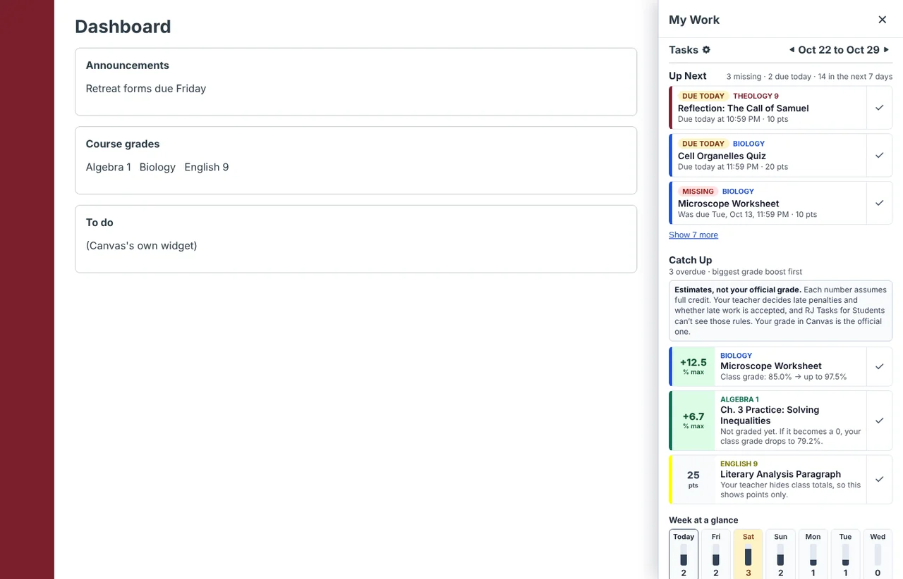
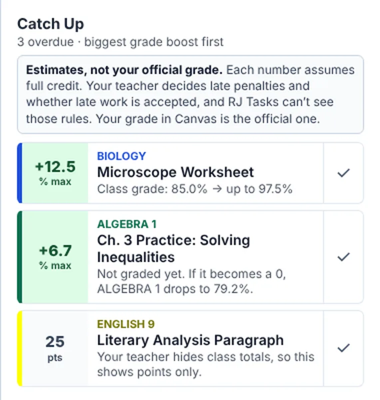
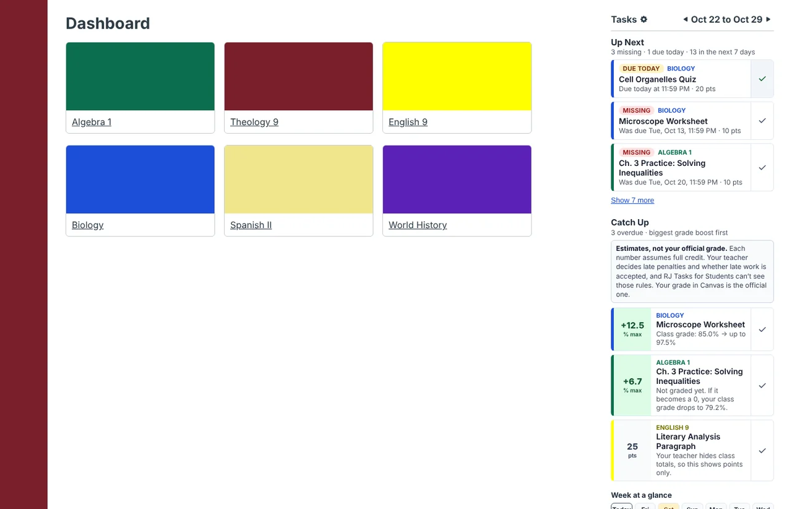
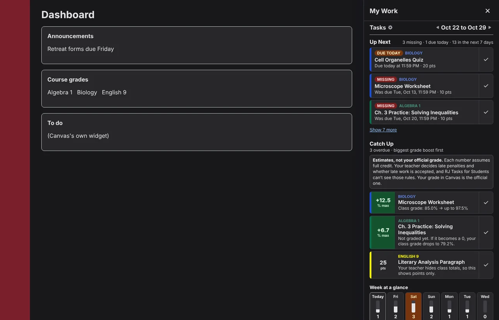
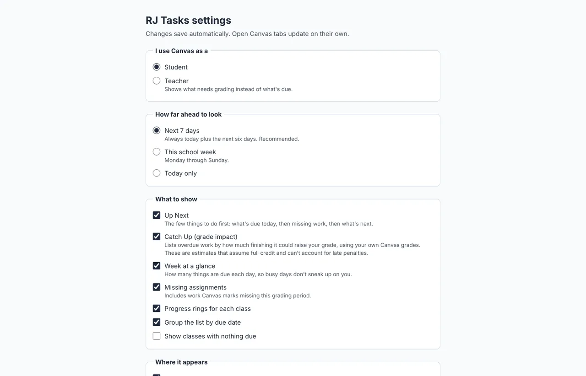

RJ Tasks for Students
Offered by Regis Jesuit High School Ed Tech





Screenshots use sample classes and assignments.
Overview
RJ Tasks for Students answers one question inside Canvas: what should I work on next? It pulls everything due across your classes into one place, puts missing work in front of you, and shows you which assignments matter most for your grade.
Up Next
The three things to do first: what's due today, then missing work, then tomorrow. Check one off and it's marked done in Canvas too, including the Canvas app.
Catch Up
Overdue work ordered by how much finishing each one could raise your grade, worked out from your own Canvas grades and category weights.
Estimates, not your official grade. Each number assumes full credit. Your teacher decides late penalties and whether late work is accepted, and RJ Tasks for Students can't see those rules. Your grade in Canvas is the official one.
Week at a glance
How many things are due on each of the next seven days, so a heavy Thursday doesn't sneak up on you.
My Work, everywhere in Canvas
A My Work button in the corner of every Canvas page, with a count of what's missing or due today. The same count shows on the toolbar icon.
Progress rings
A ring for each class showing how much of this week's work is done, with a little confetti when you finish one.
Readable by design
No themes or color tricks that make Canvas hard to read. Text drawn in your course colors is adjusted automatically so it stays readable.
Install
RJ Tasks for Students should already be on your school laptop, so you don't need to install anything. Open Canvas and look on the right side of your Dashboard, or for the My Work button in the bottom-right corner.
Not there? Add it from the Edge store, in Microsoft Edge.
Privacy
RJ Tasks for Students shows you your own Canvas information and nothing leaves your browser. Read the full privacy policy.
Help
Report a bug or request a feature
Found something that isn't working, or want RJ Tasks for Students to do something new? Use the RJ Tasks for Students form. It takes about a minute, and you'll sign in with your RJ account. For a bug, add a screenshot if you can. Please don't include other students' names or grades.
Report a bug or request a featureI don't see My Work in Canvas
Make sure you're on rjhs.instructure.com and reload the page. In Edge, open edge://extensions and check that RJ Tasks for Students is listed and switched on. On the classic dashboard, look in the right-hand column instead of the corner.
Edge asks me to turn off "developer mode extensions"
Edge shows this reminder for any extension installed by hand. Choose to keep it. When Ed Tech installs it for you, the reminder doesn't appear.
RJ Tasks for Students stopped working after I cleaned up my Downloads
The rj-tasks-for-students-1.4.1 folder was probably deleted. Download it again, put the folder in Documents, and repeat step 5.
A Catch Up number doesn't match my grade
Catch Up shows estimates that assume full credit. Late penalties, extra rules your teacher uses, and grades that haven't been posted yet can all change the real result. Your grade in Canvas is the official one. If the numbers look very different, the item is marked "about."
Can I see my practices and games next to my assignments?
Yes, in Outlook. Plan your week with Outlook shows how to add your Canvas assignments to your Outlook calendar, put in practices and games as repeating events, and plan your week in five minutes.
The panel shows an error
Reload Canvas. If it keeps happening, report a bug and add a screenshot of the message.